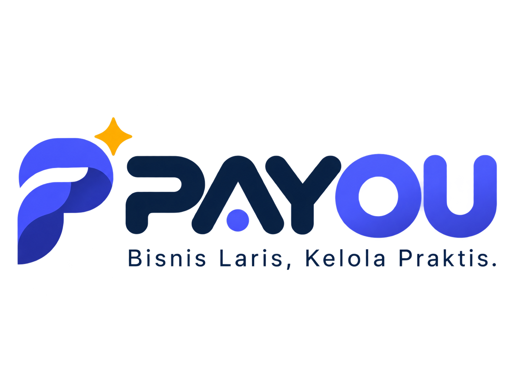

Transaksi tersimpan aman di perangkat, lalu sinkron otomatis tanpa dobel.
Struk K1-0142 · tersimpan lokal
Pilih jenis usaha, modul, pajak, dan laporan yang pas langsung menyala.
Stok berkurang, jurnal seimbang, laba rugi siap. Tanpa input ganda.
Rp73.000 · Tunai
Kopi Susu Gula Aren −2 · sisa 48
Siap hari ini
Pantau omzet dan stok, setujui void dari mana saja.
Kasir Outlet Solo meminta void Rp45.000. Alasan: salah input menu.